🖼️
Role 1 · The walls
The Portraits
The unsettling paintings watch, whisper, and lie. Sometimes they help. Sometimes they call you by name.
"Your friend has been looking at you strangely. Have you noticed? Hm."
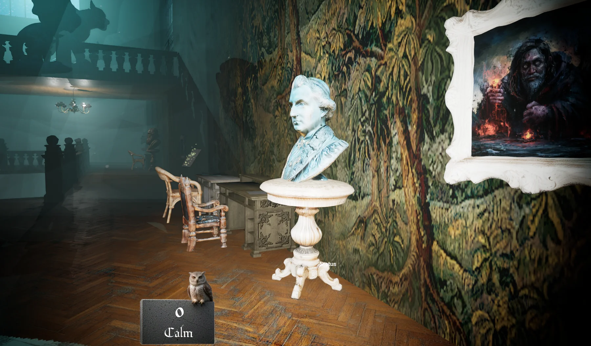
Four explorers step into a house that never ends. Every door opens onto a new room, and the house reads your mind to decide which. The monsters in the halls were explorers once. Your friends can already see you turning into one. You can't.
Why this game, and why us
This is a horror game you need neurodivergent people to survive. The house was built for ordinary minds, and it hides its secrets where ordinary minds don't look. The one who spots the pattern, the one who can't stop focusing, the one who hears the step before anyone else: they're the reason the team gets out of the next room. It's a game about the strengths in the many ways people can be different. If anyone should make it, it's Specialisterne.
And the name is a question on purpose. Are you the guests? Are they? Is the house still deciding?
The house that never ends
There's no map and no end. Open a door, and the house picks a room, checks that it fits, and builds it on the other side. Dining room, library, bathroom, the stairs down. Then another door.
The space itself is liminal. It looks like a house, but it isn't one. It's a pocket of somewhere else that resembles the world you came from, the way a dream resembles your bedroom. The people who end up here were looking for the unknown, and looked long enough for the unknown to look back.
In engineThis works. The door-by-door generator was built and running in our prototype.
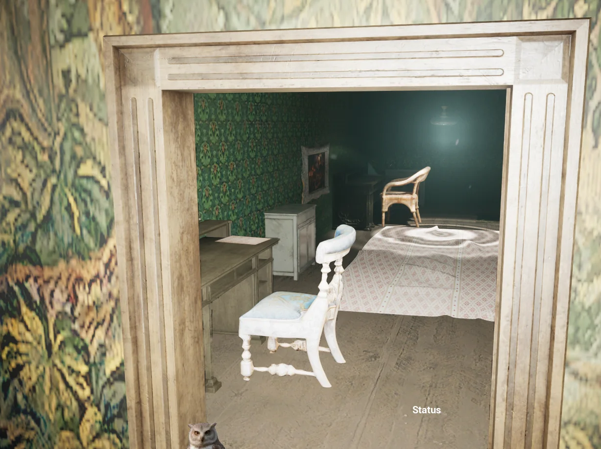
The heart of the design
Every explorer starts weak: jumpy, clumsy, afraid of the dark. The only real strengths anyone has come from how their mind works. And you don't customize by adding powers. You customize by removing a weakness.
In a horror game, you should never feel powerful. But choosing which kind of vulnerable you are gives you just enough control to feel it's your run. The team needs a mix of minds, because every room hides something different.
Spots the sigils, the out-of-place details, the painting that changed since last time. Finds the clues everyone walks past.
Locks onto a puzzle and doesn't let go, even while the lights flicker and something scratches at the door.
Always on edge, which here is a gift. Hears the step before the others and knows when a room is wrong.
Fast reflexes and routes nobody else would try. Chaotic, and often the one who finds the way through.
Holds the house in their head. Knows the way back when the corridors start folding.
Everyone starts with the same frailties. Cut one to make it yours:
The strengths are inspired by real neurodivergent traits, and the weaknesses are universal human ones, so no diagnosis carries the bad stuff. The archetypes get names, not labels, and players recognise themselves. We'd design them with the people who know best: our own students.
Sanity shapes the house
Every door rolls from a pool of rooms, and your team's state of mind decides which pool. Stay calm and it's a creepy old mansion. Start slipping and you get the rooms below the house. Lose it, and doors open onto places that can't be here at all.
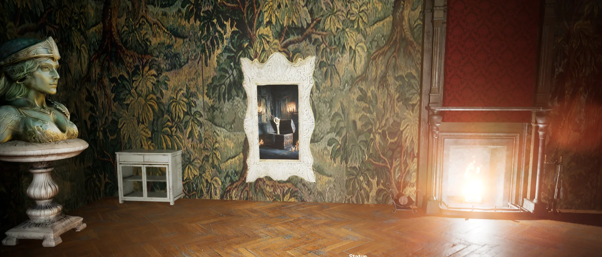
Hall, dining room, library, ballroom, gallery, bedrooms, attic. Wrong, but plausible.
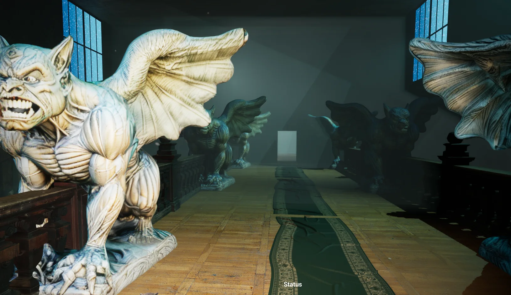
Cellar, 1800s surgery, crypt, catacombs, asylum, a gargoyle gallery that wasn't on any floor plan.
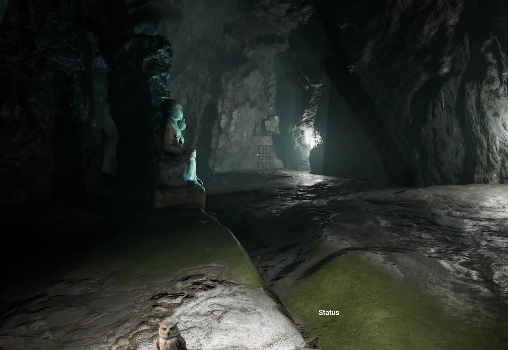
A cavern with a door in it. A backrooms office. A server room. A nursery where the chairs are three metres tall.
In engineThe owl on the stone plaque (see the top image) was our working sanity readout. It stays: a small owl keeping an eye on how you're holding up.
The signature idea
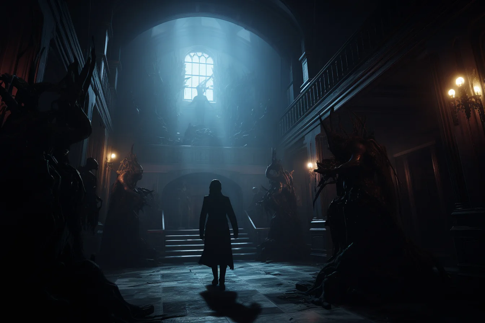
The longer you stay, the more the house changes you: an arm, a jaw, the eyes. On your own screen, your hands look perfectly normal. On your friends' screens, they don't.
The one losing their mind is always the last to know. That's the Lovecraft rule, turned into co-op. And if your friends say you look wrong, who do you believe: them, or your own eyes?
Wait. Stop. Your arm. Why is it scaly?
My arm's fine. (on his screen it is) Are you seeing things again?
And your eyes are yellow. Jonas, your eyes are yellow.
Jonas's character lunges at Maja. Jonas didn't press anything.
DID YOU JUST TRY TO BITE ME?
No! Of course not! …Why are you backing away?
It's also what makes multiplayer affordable. Everyone walks the same rooms, but each player's screen adds their own layer: how the others look, the whispers, the figure in the doorway that only you can see. Local effects don't need syncing.
The lore
Occultists, researchers, ghost-hunters. People who went looking for the unknown and found it. They wandered the house for too long, and the house kept them.
They left notes in drawers, sigils on the walls, half-finished theories about what the house is. You'll need those clues to solve the puzzles and set traps for the things that hunt you. And you'll start to wonder which of the things in the dark wrote the letter you're holding.
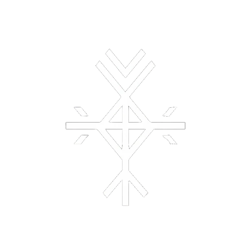
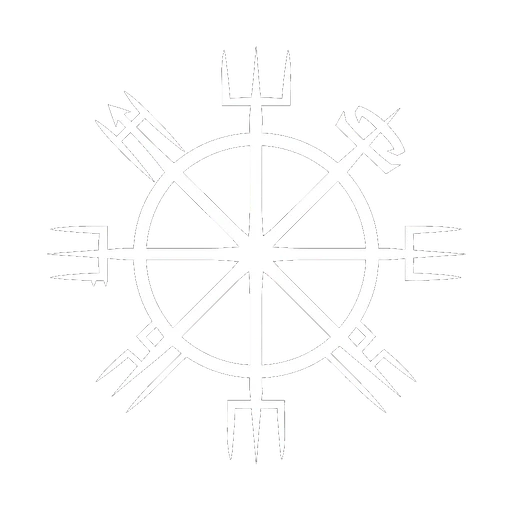
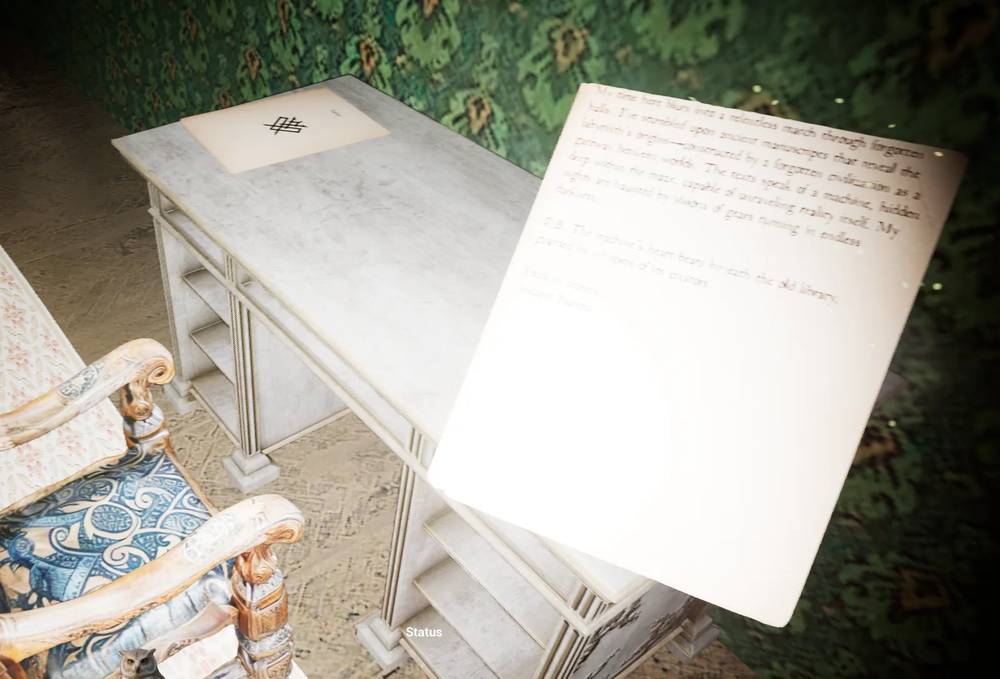
Why you open every drawer
Items are one-use or timed. You never collect them all, so every cabinet, drawer, and chest is worth a look, which is exactly where the house wants your hands.
Where the AI lives
Four kinds of voice, and no more. Any more and it's a chatbot museum.
The unsettling paintings watch, whisper, and lie. Sometimes they help. Sometimes they call you by name.
"Your friend has been looking at you strangely. Have you noticed? Hm."
Other guests, halfway through the change and unaware of it. Helpful, chatty, and a preview of your own future. Friendly until they aren't.
One quiet voice that remembers your team's run: who panicked, who left someone behind, what you took from the crypt three floors ago.
An endless house needs endless puzzles. A small language model running locally, on a school PC, writes fresh riddles and occult clues for every run.
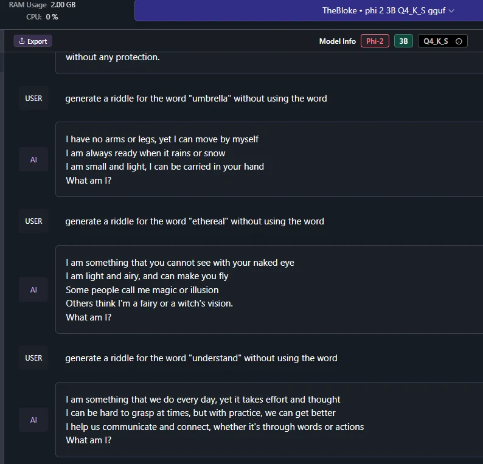
There's no ending
There's no escape and no final boss. The score is how many rooms your team got through before the house kept you. Post it, and try to beat it.
| # | Team of four | Rooms |
|---|---|---|
| 1 | Allan · Derpowich · @ssdemon · Lucy | 394 |
| 2 | Dennis · Toby · haxxorbaxxor · Casey | 265 |
| 3 | Owlwatch · Mira · Ben · "the Wildcard" | 188 |
We've been here before
An earlier class got a long way. Every image below is a real screenshot from that prototype.
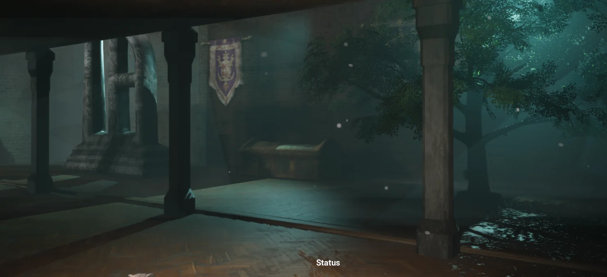
Built for a big team
Every room type is a self-contained piece one student or pair can own start to finish. That makes this a natural fit for a multi-class project. Here's the list from our old planning thread:
The House
Below Stairs
The Wrong Places
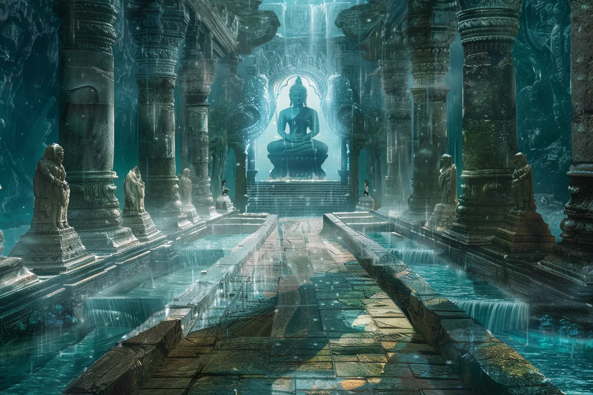
For the staff room